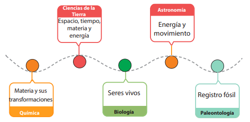

¿Sabías que el conocimiento científico se genera a través del método científico? ¿En qué consiste ese método?
¿Se aplica en los fenómenos de la vida diaria?
El conocimiento es conjunto de conceptos e ideas (y la relación entre estos) adquiridos mediante la experiencia y el razonamiento.

El conocimiento se clasifica en: ■ Popular (natural, vulgar). Es cotidiano y se caracteriza porque permanece en el tiempo; además, suele pertenecer a culturas determinadas sin orígenes claros. Este tipo de conocimiento se aprende y se aplica. ■ Científico. Ocurre mediante el seguimiento de una metodología o serie de pasos con la finalidad de descubrir causas y fenómenos e interpretar hechos. Se aprecia la realidad mediante la observación registrada, la demostración y comprobación de eventos de forma sistemática, por lo que supera el sentido común. Partiendo de esto, la ciencia se puede definir como el conjunto de conocimientos objetivos y verificables relacionados con la realidad que rodea al ser humano, y que busca formular explicaciones para incorporarlas a las preexistentes, con el propósito de seguir construyendo nuevos conocimientos.
Las ciencias pueden ser: ■ Naturales: se encarga del estudio de fenómenos naturales y de las leyes que los rigen. En esta categoría se encuentran la química, física, biología, astronomía, zoología, botánica, meteorología, paleontología. ■ Formales: Estudian contenidos abstractos, como las matemáticas, la lógica y las ciencias de la computación. ■ Sociales: Atienden las dimensiones individuales y colectivas de la existencia. Algunas son: antropología, economía, derecho y sociología.
Métodos de investigación científica Existen diversas opciones para abordar los problemas que se presentan en la ciencia y la construcción de nuevos conocimientos científicos. Estos son: ■ Método sintético: busca reconstruir un acontecimiento de manera resumida, valiéndose de los diferentes elementos fundamentales que estuvieron presentes en el desarrollo del acontecimiento. ■ Método inductivo: lleva a conclusiones generales a partir de casos individuales. ■ Método deductivo: va desde un razonamiento general y lógico, basado en leyes o principios, hasta un hecho concreto. ■ Método analítico: consiste en la separación de un todo descomponiéndose en sus partes o elementos para observar las causas, naturaleza y los efectos.
El método científico consiste en un proceso donde se emplea: ■ Observación: se define el fenómeno natural desde la realidad y de manera objetiva. ■ Planteamiento del problema: se identifica y formula claramente la pregunta a resolver. ■ Hipótesis: se establecen suposiciones para tratar de explicar la causa del fenómeno natural. ■ Experimentación: Se diseña un experimento, se realiza y se anotan los resultados con la finalidad de confirmar, descartar o reformular la hipótesis. ■ Análisis: se debe examinar y evaluarlos datos recopilados, de manera efectiva. ■ Conclusión: se presentan los resultados a la comunidad científica y al público en general.
Actividad
Construye una definición de las disciplinas:
Física, Química, Biología, Astronomía
y menciona algunas profesiones relacionadas a ellas. Incluye además algunas ramas más actualizadas de las Ciencias Naturales. ● Replica algun experimento de internet. Anota en tu cuaderno y desglosa la información obtenida al realizar los pasos del método científico.